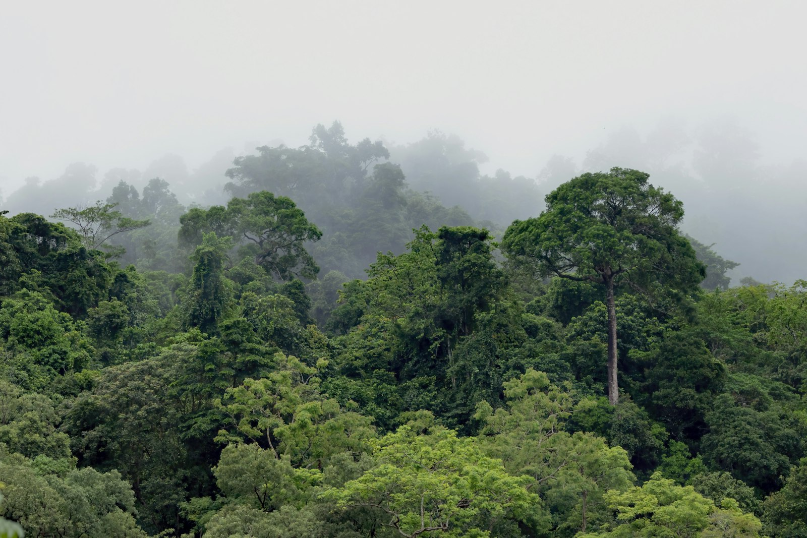

Amazon Field Guide · Wildlife No. 10
Macaw: Rainbow Sentries of the Upper Canopy
Lapis wings, scarlet bodies, and sun-yellow underfeathers flash like living confetti. Meet the long-lived seed couriers that keep the Amazon’s tallest trees planting themselves.

If you look up into the Amazon’s green roof at sunrise, you might catch a flash of red, blue, and gold. That streak is a macaw—one of the rainforest’s loudest neighbours and one of its most important gardeners. These big parrots are more than jungle eye-candy. They are long-lived seed couriers, social engineers, and ever-louder alarm bells for a forest under pressure.
Amazon macaws favour tall terra-firme and floodplain forests rich in palm and fig trees. Some species also commute to open savannas and seasonally flooded swamp-woods. Flocks of about 10–30 birds roost together at night, then break into lifelong pairs by day. Partners may forage up to 40 kilometres between fruiting hotspots and mineral-rich riverbank clay licks.
A noisy life high above the floor
Vocalisations—raucous honks, metallic screeches, and throaty growls—keep partners in contact through dense foliage. The same calls warn rival flocks away from nest trees that can sit 30 metres above the forest floor. Breeding often peaks at the start of the long dry season, when hollow kapok or Mauritia palms offer secure nest chambers. Two hatchlings may emerge after about 28 days, but food scarcity often leaves a single fledgling to launch into the canopy after roughly three months.
“Macaws are fruit-crackers with hydraulic beaks—and long-distance planters of the palms they feed on.”
Why the canopy needs its rainbow gardeners
Macaws are omnivorous fruit-crackers. Chemical studies of what they regurgitate list more than 100 plant species, plus flowers, bark, termites, and the occasional snail. Many favoured seeds contain toxic alkaloids. To handle those chemicals, birds visit clay licks—exposed river bluffs packed with sodium-rich soil.
Far from mere seed predators, macaws are recognised as primary long-distance dispersers of large-seeded palms such as motacú (Attalea princeps). They can carry intact fruits up to about 1.2 kilometres before dropping viable seeds beneath perch trees, helping shape forest islands across places like Bolivia’s Beni savannas. Their foraging also prunes canopy fruits, which can stimulate staggered ripening that helps smaller fruit-eaters.
How the clay-lick ritual works
- Gather at dawn. Hundreds of macaws may wheel and squabble above an exposed river bluff before any bird dares to land.
- Latch onto the wall. Birds cling to the vertical clay face and scoop mouthfuls of sodium-rich soil.
- Neutralise tough toxins. Clay helps counter alkaloids in hard palm nuts and other seeds that few animals can crack.
- Fly on to fruit. With minerals topped up, pairs head back to fruiting trees—sometimes dozens of kilometres away—ready for another day of cracking, carrying, and planting.
Five things that make a macaw a survivor
- A mega-beak can deliver bite forces topping about 300 newtons—enough to cleave Brazil-nut pods.
- Zygodactyl feet (two toes forward, two back) act like pliers for climbing and food handling.
- Bare facial skin can flush crimson during agitation, broadcasting mood inside noisy flocks.
- Strong pair bonds help partners defend scarce nest cavities in a predator-rich forest.
- Long lives and reused nest hollows let successful pairs raise chicks across decades.

Trouble ahead—and reasons to hope
Beauty is a curse for macaws. Up to about 150,000 wild parrots—many of them macaws—enter global markets each year despite CITES protections, with chicks sometimes fetching thousands of dollars at auctions. Logging and agriculture erase nest trees and food palms; harvesters may fell entire Aguaje palms for fruit, wiping out both pantry and nursery in one cut. Clay licks suffer too: outboard motors and tourist overflights can frighten birds away for days, cutting the sodium intake nestlings need to grow.
Climate stress adds another squeeze. Intensifying droughts shrink fruit crops and raise fire risk, packing flocks into remnant food patches where disease can spread. The critically endangered blue-throated macaw numbers fewer than 450 individuals, confined to fragmented Beni savanna islands threatened by cattle expansion.
Hope is not gone. Long-term studies along Peru’s Tambopata River show nest-box programs boosting blue-headed and scarlet macaw fledging success by about 25% within a decade. In Bolivia, community guards and palm-friendly harvest rules spare vital Mauritia stands, while land purchases protect key forest islands. Seed-dispersal science is reframing macaws as ecosystem engineers—a strong argument for canopy corridors that secure both the birds and the trees they plant. Keeping these rainbow sentries aloft means halting illegal trade, safeguarding clay licks, and sparing the towering palms that hold the forest’s future.

Odd facts
Word bank
- Alkaloid
- — a natural plant chemical that can be toxic; clay helps macaws cope with some of these toxins.
- Clay lick
- — an exposed riverbank or bluff where birds eat mineral-rich soil.
- Ecosystem engineer
- — a species that shapes habitats for many other living things.
- Seed disperser
- — an animal that carries seeds away from the parent plant so new trees can grow.
- Zygodactyl
- — a foot with two toes pointing forward and two back, useful for gripping branches.
- CITES
- — an international agreement that controls trade in endangered wild animals and plants.